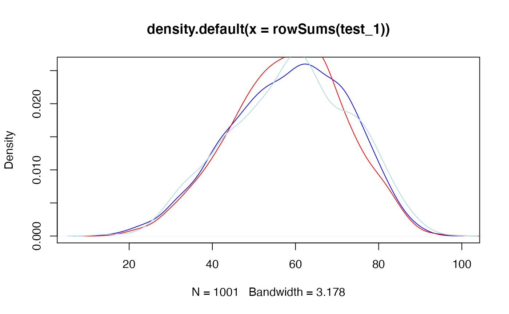

Introduction
For a population \(Y\), sample \(X\), and parameter set \(\theta\),
\[\begin{align*} f(\theta, Y = y| X = x) &= \frac{ f(X = x | \theta, Y = y) f(\theta, Y = y) }{ f(X = x) } \\ &\propto f(X = x | \theta) f(Y = y | \theta) f(\theta) \\ &\propto \pi(\theta | X = x) f(Y = y | \theta) \end{align*}\]
Redefining the Hypergeometric Distribution
Let \(f(Y, K, X, J)\) denote the discrete Hypergeometric probability function, and let \(y\), \(k\), \(x\), and \(j\) denote realizations of \(Y\), \(K\), \(X\), and \(J\) respectively, where:
- Y is the population (i.e., the vector of \(\{0, 1\}\) with length \(N\))
- K is the number of successes (1’s) in the population Y
- X is the sample, with length \(n\)
- J is the number of successes (1’s) in the sample X
\[\begin{align*} f(Y = y, K = k | X = x, J = j) &= \frac{ f(X = x, J = j | Y = y, K = k) f(Y = y, K = k) }{ f(X = x, J = j) } \\ &\propto f(X = x, J = j | K = k) f(Y = y | K = k) f(K = k) \\ &\propto \pi(K | X = x, J = j) f(Y = y | K = k) \end{align*}\]
What Prior to Use?
We need to choose \(\pi(K)\), the prior on the number of successes in the population. If we were working with instead a parameter \(p\) denoting the probability of success or failure, we would use the \(Beta(\frac{1}{2}, \frac{1}{2})\) prior.
From Jeffreys (1946, 1961), the induced prior on \(K\) can be found by constructing a hierarchical prior of the form
\[ Binom(K | p) Beta(p | \frac{1}{2}, \frac{1}{2}) \]
and then marginalizing to find \(\pi(K)\). Thus,
\[\begin{align*} \pi(K) &= \int_{0}^{1} {N \choose K} p^K (1-p)^{N-K} \frac{1}{\pi} p^{-\frac{1}{2}} (1-p)^{-\frac{1}{2}} \\ &= \frac{1}{\pi} \frac{ \Gamma(K + \frac{1}{2}) \Gamma(N - K + \frac{1}{2}) } { \Gamma(K + 1) \Gamma(N - K + 1) } \end{align*}\]
We can visualize this prior for \(N = 100\).

Note that this induce a flat prior on \(K\) if we were to instead use a flat prior on \(p\).
MCMC Implementation
Now, we create a basic function to sample from this posterior.
logprior <- function(K, N, a, b) {
-log(pi) + lgamma(K + a) + lgamma(N - K + b) - lgamma(K + 1) - lgamma(N - K + 1)
}
logpost <- function(K, N, J, n, a, b) {
dhyper(J, K, N - K, n, log = TRUE) + logprior(K, N, a, b) - lchoose(N, K)
}And we can sample from that posterior with MCMC using Metropolis-Hastings.
popsim_hyperg_1 <- function(obs, N, samples = 1000, a = 0.5, b = 0.5) {
J <- sum(obs)
n <- length(obs)
out <- matrix(NA, nrow = samples + 1, ncol = N)
out[1, ] <- sample(c(0, 1), size = N, replace = TRUE, prob = c(1 - mean(obs), mean(obs)))
current_lp <- logpost(sum(out[1, ]), N, J, n, a, b)
for(i in 2:(samples + 1)) {
current <- out[i - 1, ]
for(k in 1:N) {
proposal <- current
proposal[k] <- as.integer(!current[k])
proposal_lp <- logpost(sum(proposal), N, J, n, a, b)
u <- runif(1)
if(log(u) <= proposal_lp - current_lp) {
current <- proposal
current_lp <- proposal_lp
}
}
out[i, ] <- current
}
return(out)
}Now lets test these samplers.
test_1 <- popsim_hyperg_1(obs, N, 1000)
test_srs2 <- srs2(obs, N, 1000)
test_srs3 <- srs3(obs, N, 1000)
plot(density(rowSums(test_1)), col = "blue")
lines(density(rowSums(test_srs2)), col = "red")
lines(density(rowSums(test_srs3)), col = "lightblue")